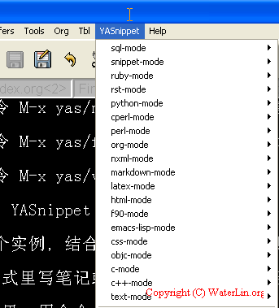
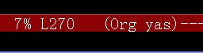

YASnippet 是 Emacs 的一个缩略词 (abbreviation) 模板替换系统，可以把一个预先设定好的缩略词扩展成模板。刚开始用 YASnippet 的时候，一般感觉无从下手，现在就简单介绍一下 YASnippet 最基本的使用方法。
- YASnippet 的安装
YASnippet 有两种安装方法，可以视个人情况选用。
1). 单个 yasnippet-bundle.el 文件安装方式
如果想快速地试用、了解一下 YASnippet 这个系统，从官方网站下载 yasnippet-bundle.el 这个文件，放到 Emacs 扩展目录里，然后把下面的代码放到 .emacs 文件里：
(add-to-list 'load-path "~/.emacs.d/plugins") (require 'yasnippet-bundle)本方法适合于快速地试用一下 YASnippet 系统，当然，如果你需要修改模板或是定制自己的扩展模板，你就需要用下面介绍的完全安装方法。
2). 完全安装方法
需要完全安装 YASnippet 的话，先从官方网站上下载完整的 yasnippet-x.y.z.tar.bz2 包，把包解压放到 Emacs 的扩展目录，然后添加下面的语句到 .emacs 文件里：
(add-to-list 'load-path "~/.emacs.d/plugins/yasnippet-x.y.z") (require 'yasnippet) ;; not yasnippet-bundle (yas/initialize) (yas/load-directory "~/.emacs.d/plugins/yasnippet-x.y.z/snippets") - YASnippet 的基本使用方法
正确安装好 YASnippet 后，重新启动 Emacs 就可以看到菜单栏里多了一个 YASnippet 的菜单（图1所示），

mini buffer 上也会显示出类似于 (org yas) 的字样（这里是指 yas 作为子模式存在于主模式 org 里）如图2所示。

总的来说，正确安装好 YASnippet 后，只要输入缩略词，然后用 TAB 键或是 C-i 就可以完成扩展了。
在 Emacs 启动后，YASnippet 模式是作为一个子模式 (minor mode) 存在于各个模式之中。要用 YASnippet 进行缩略词补全有好多种方法，最常用的补全方法有三种：
- 输入一个缩写词 (abbrev)，然后用 snippet 的触发键 (trigger key) 来补全。这个键默认是 TAB 或是 C-i，当然，也可以用命令 M-x yas/expand 来进行扩展。
- 用命令 M-x yas/insert-snippet 直接进行输入，输入完这个命令后，会弹出一个补全窗口，提示当前主模式下可以补全的模板。
- 直接从菜单栏里的 YASnippet 里，选择内容进行输入。
有关 YASnippet 使用的更详细叙述，可以参考官方文档 Expanding snippets。
- YASnippet 个性化定制的命令
虽然 YASnippet 已经自带了许多常用的扩展模板，但是很多情况下，我们需要根据自己的实际情况，来进行模板定制。以下是扩展 YASnippet 常用的一些命令：
- 用命令 M-x yas/new-snippet 就可以新建一个扩展模板 (snippet)，YASnippet 会自动提示存放该模板的最佳目录。
- 用命令 M-x yas/find-snippets 可以查找 snippet 文件，默认的目录是当前主模式下的模板文件 (snippet file) 的存放目录。
- 用命令 M-x yas/visit-snippet-file 可以通过弹出的对话框来寻找你需要的模板文件 (snippet file)，在对话框里选择一个选项，就会打开这个模板文件 (snippet file) 来让你编辑。
- org 里的 YASnippet 使用实例
下面就用一个实例，结合 YASnippet 的语法规则，来简单介绍一下 YASnippet 最基本的使用。
我在 org 模式里写笔记或是发布网页的时候，经常需要添加一个有关版权声明的文字（或为公司，或为自己）。因为公司和私人的内容都混在一起，所以我需要有多个模板。下面就以添加我个人版权声明的模板为例，介绍一下配置 YASnippet 的完整步骤。
1). 添加一个有关个人版权的 snippet
首先，在 org 模式里，用命令 M-x yas/new-snippet 来添加一个 snippet，输入你想要的 snippet 名称，我这里输入
Copyright
YASnippet 会自动生成一个名叫 Copyright.yasnippet 的文件，生成的内容如下：
# -*- mode: snippet -*- # name: Copyright # key: # binding: "keybinding" # expand-env: ((some-var some-value)) # --
2). 现在我们只需要根据 YASnippet 的相关语法来修改这个文件就可以了。上面文件关键词的基本语法含义如下：
- # name: 显示在弹出菜单里的 snippet 名称
- # key: 缩略词，即你在用 TAB 键进行扩展前输入的关键词，如果不设定，则把这个关键词默认为本文件名
- # binding: 设置使用哪个组合键来直接插入这个 snippet，对于比较常用的模板内容比较有用
- # expand-env: 用 elisp 重新设置一些环境变量
- # – 表示在这一行之上的全是注释
3). 因为我们这里是配置一个最简单的模板，所以，我们删掉 # key:，# binding:，# expand-env: 这三个高级定制功能。最后，我们写成类似下面的东西：
# -*- mode: snippet -*- # name: Copyright # -- #+BEGIN_HTML <p style="TEXT-ALIGN: center"> 原创文章，如转载请注明：转载自细节之锤 [ <a href="http://blog.waterlin.org/">http://blog.waterlin.org/</a> ] </p> <p style="TEXT-ALIGN: center"> Copyright © WaterLin.org. All rights reserved. </p> #+END_HTML
4). 重启 Emacs 让修改生效，然后我们再回到 org 文件里，这个时候，可以直接输入一个 Copyright （注意：缩略词大小写敏感），然后用 C-i 进行替换（原本可以用 TAB 键的，但是 Emacs23 里的 org 模式把 TAB 键给霸占了），就可以把 Copyright 这个词替换成上面用 html 写成的版权声明。
在 org 模式里，我们可以用同样的方法来插入 #+begin_example，#+begin_ditaa，#+begin_dot，#+begin_src 等标记，这样可以节省一大笔时间。
一般来讲，用 YASnippet 来进行替换与自动插入，比直接用 elisp 写一个函数、命令来进行插入要简单、方便得多，并且容易管理。
YASnippet 的模板语言 (Template syntax) 还有着更加灵活的用法，参见官方文档 Writing snippets。
原创文章，如转载请注明：转载自细节之锤 [ http://blog.waterlin.org/ ]
Copyright © WaterLin.org. All rights reserved.
Comments
[...] vim, Emacs 这类文本编辑器里，则可以很自然地使用宏操作来插入 Doxygen 注释；如果是用 Visual Studio 的话呢，也是可以用 DoxyComment add-in for Visual Studio 2005 [...]
[...] YASnippet基础入门:http://blog.waterlin.org/articles/emacs-yasnippet-basic-usage.html [...]
-
订阅我吧